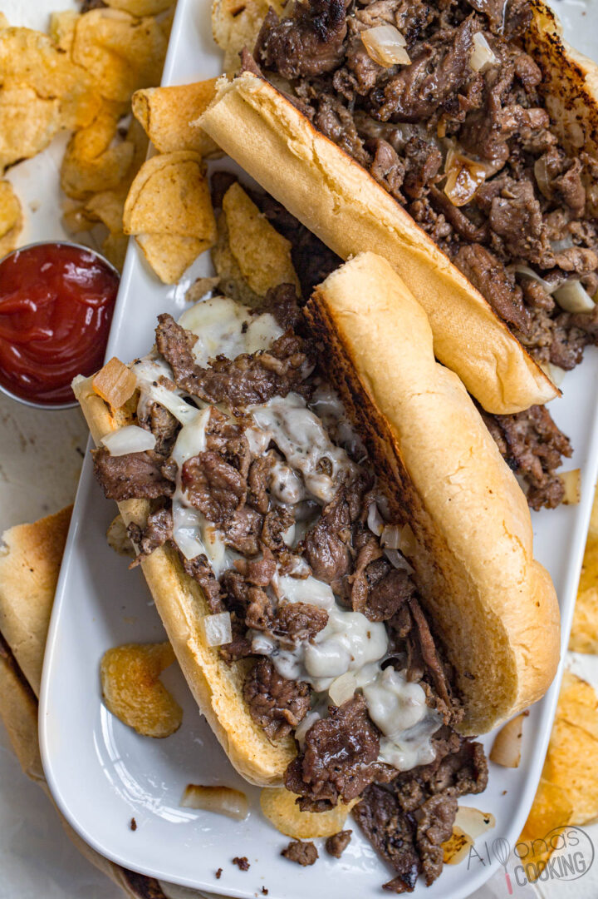

Phily Cheese Steak

Decription
Philly cheesesteaks are a beloved American sandwich that originated in Philadelphia,
Pennsylvania in the early 20th century. The sandwich is made with thinly sliced beefsteak,
sautéed onions, and melted cheese, all piled high on a long, crusty roll. The beef is typically
cooked on a flat-top griddle and seasoned with salt and pepper, while the onions are caramelized
to add sweetness to the sandwich.
The cheese used in a Philly cheesesteak is an important component of the dish. Traditionally,
the sandwich is made with Cheez Whiz, but other types of cheese such as provolone or American
cheese can also be used. The sandwich can be customized to individual preferences by adding
toppings such as peppers, mushrooms, or even hot sauce. Overall, a Philly cheesesteak is a
delicious and satisfying sandwich that's become a staple in American cuisine, enjoyed by people
all over the country.
Ingredients
- 1 tablespoon vegetable oil
- 2 pounds ribeye, fat trimmed, thinly sliced
- 2 teaspoons kosher salt
- 1 large sweet onion, diced
- 4 hoagie rolls, halved lengthwise (don't cut all the way through)
- 4 tablespoons salted butter, softened
- 1 garlic clove, grated
- 4 tablespoons mayonnaise
- 1/2 teaspoon freshly cracked black pepper
- 8 slices sharp or mild provolone cheese
Steps
- Preheat the oven to 400°F with a rack in the center position.
- Heat the oil in a large cast iron skillet over high heat. Once the oil is glistening,
working in batches, add the beef in a single layer and season with ½ teaspoon of salt.
Cook, undisturbed, until meat begins to brown, about 2 minutes. Stir and continue cooking
until the beef is cooked through, about 2 minutes more. Using a slotted spoon, transfer
the beef to a plate.
- Reduce the heat to medium. Add the onions to the same skillet and season with remaining 1/2
teaspoon of salt. Cook, stirring often, until browned and softened, 5-8 minutes.
- Meanwhile, in a small bowl, combine mayonnaise and garlic. Spread 1 tablespoon of butter on
the cut sides of each hoagie roll. Arrange rolls, cut sides up, on a sheet pan and bake until
toasted, about 4 minutes. Remove from the sheet pan from the oven and spread 1 tablespoon of
garlic mayo on the cut sides of each roll. Return beef to the skillet with the onions and season
with black pepper. Cook, stirring, over medium heat until warmed. Remove the skillet from heat and
top the beef mixture with provolone in a single layer.
- Once the cheese begins to melt, divide the cheese and meat between toasted hoagie rolls. Serve immediately.